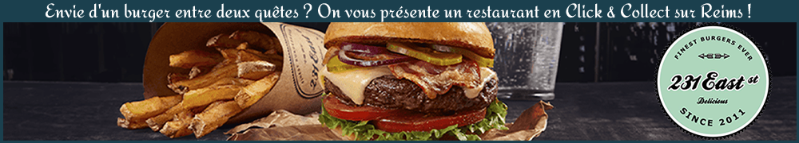
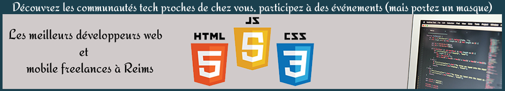

Viens à la découverte d'un monde sauvage !
Présentation de la jungle
Tournée vers l’avenir, la Wild Code School est un organisme de formation dédié aux métiers du numérique créé en 2014. Quatre parcours sont proposés aux élèves à travers 20 campus, présents en France et en Europe.
A Reims, les « Wilders » peuvent intégrer le parcours « Développeur Web et Web mobile », une formation intensive de 5 mois qui leur permettra d’apprendre un métier devenu incontournable de nos jours et de plus en plus recherché par les entreprises.
Intégrer la Wild, c’est intégrer son univers pouvant parfois sembler sauvage tant les découvertes sont nombreuses et les repères parfois bouleversés.
Mais pas d’inquiétude, l’accompagnement quotidien apporté aux élèves leur permet, à l’image d’une boussole, de ne jamais s’égarer bien loin du chemin qui les mènera à la réussite !
La WILD CODE SCHOOL a organisé ce 1er mars 2021, la 9ème rentrée de sa formation Développeur Web et Web mobile.
La promo Insomniac a pu faire connaissance, rencontrer Romain (le formateur) et Clément (le campus manager) et découvrir les locaux, situés à deux pas de la gare Reims Centre.
Cette première journée a été l’occasion de mettre en place les différents outils nécessaires à la formation qui se déroulera, au vu du contexte sanitaire actuel, à distance.
Le code sans chaussures
A la Wild Code School, on code sans chaussure! En effet cela peut paraître étrange de prime à bord mais l’état d’esprit novateur de l’école mise sur une philosophie simple : « Lorsque les pieds sont libérés, l’esprit l’est également ».
L’école met un réel point d’honneur à mettre à l’aise ses élèves tout au long de leur formation.
A la maison ou dans les locaux, tous les élèves sont donc invités à troquer leurs chaussures contre leurs chaussons (ou leurs plus belles chaussettes) afin de se sentir le mieux possible et de sortir du cadre très formel du monde du travail traditionnel.
⚠ PUB ! ⚠
Envie d'un burger entre deux quêtes ? On vous présente un restaurant en Click & Collect sur Reims !
Découvrez les communautés tech proches de chez vous, participez à des événements (mais portez un masque)
En quête d'aventures

La pédagogie prônée par l’école et mise en place par les formateurs est dite « inversée ». Cela ne vous dit peut-être rien mais dans les faits, c’est la meilleure manière d’apprendre.
En effet, à travers les quêtes, les élèves sont d’abord confrontés seuls aux problématiques afin qu’ils puissent y réfléchir par eux-mêmes avant de recevoir des cours théoriques et ainsi les solutions et explications.
Encore une fois, cela est directement inspiré du monde professionnel car être développeur implique d’être régulièrement face à l’inconnu et donc de faire preuve d’une certaine autonomie afin de trouver les réponses aux multiples questions qui se poseront.
Les valeurs véhiculées par l’école sont l’envie de réussir, la créativité et le travail en équipe car ce sont celles qui permettent aux étudiants une intégration optimale au marché du travai